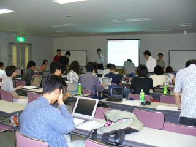

第 5 回 Ruby 勉強会＠関西 レポート
書いた人：なかむら
はじめに
去る 2005 年 8 月 20 日 (土)、大阪府立女性総合センター (通称「ドーンセンター」) にて第 5 回 Ruby 勉強会＠関西が開催されました。 当日のプログラムは Ruby のみで書かれた画像処理ライブラリの紹介と、前回に引き続いての Ruby 初級者向けレッスンでした (合計 4 時間)。
今回も 40 名前後という大人数の Rubyist の皆さんが参加されました。 前回は会場が女子大だったので女性の参加が多かったのですが、今回は前回ほどではありませんでした。 それでも、1 割程度の女性の参加がありました。
Ruby de 画像処理
: 
一つ目は、西本さんによる、pure Ruby 画像処理ライブラリである Ruby/PureImage の紹介でした。
まず、そもそもコンピュータによる画像処理とはどういうものか、という説明から始まり、西本さんが作成された PureImage についての説明、そして実際に PureImage を使用した画像処理の実例の紹介、などが行われました。
PureImage は Ruby のみで実装されているため、C 言語などで書かれた画像処理ライブラリを利用したラッパー系のライブラリと比較するとどうしても速度面で不利が生じることが予想されるわけですが、pure Ruby であればインストールが非常に簡単であること、取り扱うのが例えば Web を対象にしたような小さな画像であればパフォーマンスの不利はそんなには大きくならないこと、などを理由にメリットがデメリットを上回ると判断されたようです。 実際、途中で行われた実行例の中には確かに待たされるものもありましたが、大抵は特に遅すぎるということもなく、用途次第では Ruby だけで書いてあっても十分実用になるようです。 また、遅いと言われることも多い Ruby ですが、西本さんによれば、例えば配列処理などは Ruby でも結構早いことがわかった、とのことでした。 速度的な問題のうち多くの部分は、本誌でもおなじみの YARV が実用化されれば解決される部分もあるでしょうし、かなり将来は楽観的であろうと思います。
西本さんによると、PureImage はこれからもどんどん発展させていく方針だということで、今後も期待できそうだという印象を受けました。
画像処理というと、興味はあっても、実際に何ができるのか、どういうことをコンピュータにやらせれば便利なのか、という点などが判然としないため、なんとなく「よくわからない」という理由で手を出さない人が多かったようですが、西本さんの説明と実例で「こんなこともできるのか」という思いを抱いた人も多かったようです。
なお、配布された資料と、実際に説明に使われたスクリプトなどは勉強会のページで配布されています。
Ruby 初級者向けレッスン
: 
続いて、かずひこさんによる Ruby 初級者向けレッスンが「Ruby で学ぶオブジェクト指向」というお題で行われました。
オブジェクト指向というと「難しいもの」というイメージがありますが、難しいと思われているからこそできるとカッコいいわけで、ぜひとも使いこなしてモテ系エンジニアを目指そう、という前向きな姿勢が印象的でした。 レッスンのうち講義部分は軽快なテンポで進み、その分演習時間が多めに取られました。どうやら、前回は演習の時間がやや足りなかったことを改善されたようです。 演習の内容は会社での社長命令に対する各役職の反応を作成するというものだったのですが、内容がユーモラスでその部分にウケていた人も多かったようです。 演習中は、アシスタントを担当された Ruby 熟練者の方々が、会場内のあちこちで初級者の皆さんに説明している風景が見られました。
なお、今回は会場に PC がなかったため、各自可能な限り自前でノート PC を持ってくるように指示があったのですが、会場に大量のノート PC が並ぶ姿はなかなか壮観でした。 興味を引かれたのでちょっと数えてみたのですが、持ち込まれたノート PC は 30 台で、特に iBook が多かったようです。 なお、ノート PC を持ってこられなかった方も、近所の席の人に見せてもらい、皆さんで助け合って演習が行われていました。
かずひこさんによると、次回は予定では「Ruby で学ぼうデザインパターン」だそうで、これもまた楽しみです。
なお、配布された資料や、演習問題とその回答は勉強会のページで配布されています。
懇親会
勉強会の終了後は、会場近所の居酒屋志な乃亭で 3 時間近くに渡って懇親会が行われました。 懇親会の参加者も 30 人近くになり、Ruby に関していたりいなかったりする話題で皆さん楽しいひとときを過ごされたようです。
今回も人数が多く、毎回全員自己紹介していてはきりがないので、初参加の方だけ自己紹介して頂くことになったのですが、mixi の Ruby コミュニティでのイベント情報を見て参加された方が多かったようです。 Ruby のコミュニティというと ruby-list や ruby-dev といった ML が話題に上がることが多いですが、Ruby も裾野が広がって、様々な入り口が見られるようになってきたようです。
おわりに
次回の勉強会は、懇親会では 10 月 1 日という方向で調整されていましたが、どうやら 10 月 8 日に京都女子大にて開催することになりそうです。
Ruby を始めとするオープンソース系のイベントは、どうしても東京を中心に開催される傾向がありますが、毎年恒例となった関西オープンソースを始めとして、関西にもコミュニティを形成する地盤はしっかりと存在します。 Ruby 勉強会＠関西も、定期的に開催される上、Ruby に興味のある人はいつでも参加 OK ですから、ちょっとでも面白そうだと思った方は、ぜひ参加してみてください。
また、関西に限らず、他の地域でも、このような定期的なイベントが行われるようになるといいのではないでしょうか。 案ずるより産むが易し、という面もありますよ、きっと。
なお、最後になりましたが、今回の勉強会の運営に携わってくださった皆さんと、講師をしてくださったお二方に感謝したいと思います。どうもありがとうございました。 そして、参加した皆さんへ。Rubyist Magazine もよろしくお願いします。